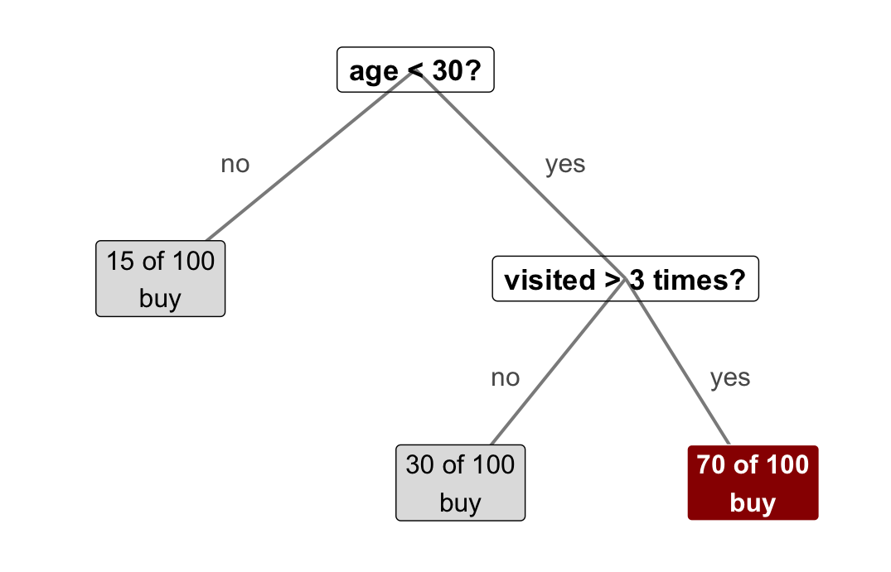
MKT 566 · Fall 2026
USC Marshall School of Business
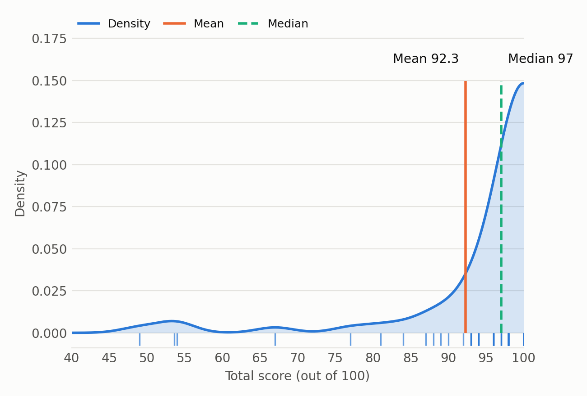
So far every model answered “what drives Y”: what drives price, what drives the chance a listing is a gem. We read coefficients and told a story about the market.
Today we ask a different question: “who will do it?”
Same tools, different goal: we no longer care only about why. We care whether the model can call the right names, customer by customer, so marketing can act: who gets the retention offer, the ad, the audit.
A classifier is a model that assigns each customer (each row) to a class, a bucket:
| Kind | Classes | Marketing example |
|---|---|---|
| Binary | 2 | churn vs. stay, click vs. no click |
| Multi-class | 3 or more | which ad (A, B, or C), which product category |
| Ordinal | ordered | star rating (1 to 5) |
You already built one. The logit from week 5 outputs a probability: add a cutoff, and it is a classifier. Today: how to judge it, and what else is in the toolbox.
| Model | How it decides | Can you read it? |
|---|---|---|
| Logistic regression | one score from a weighted sum of features, turned into a probability | yes: coefficients and odds ratios (week 5). The usual baseline: the simple model you start from and try to beat |
| Decision tree | a flowchart of simple rules (“age < 30 and visits > 3: likely buyer”) | yes: show the tree to a manager |
| Random forest | hundreds of trees, each on a random slice of the data; they vote | partly: it ranks which features matter, but there are no rules to read |
| Boosting (XGBoost) | trees built one after another, each fixing the previous one’s mistakes | partly: many settings to get right |
| Neural network | layers that learn combinations of features | no: a black box |
The tradeoff that runs through the whole table: better predictions vs. a story you can read. Forests and boosting usually predict a little better; the logit is the easiest to explain. Start with the logit, then check whether the fancy model beats it by enough to matter.

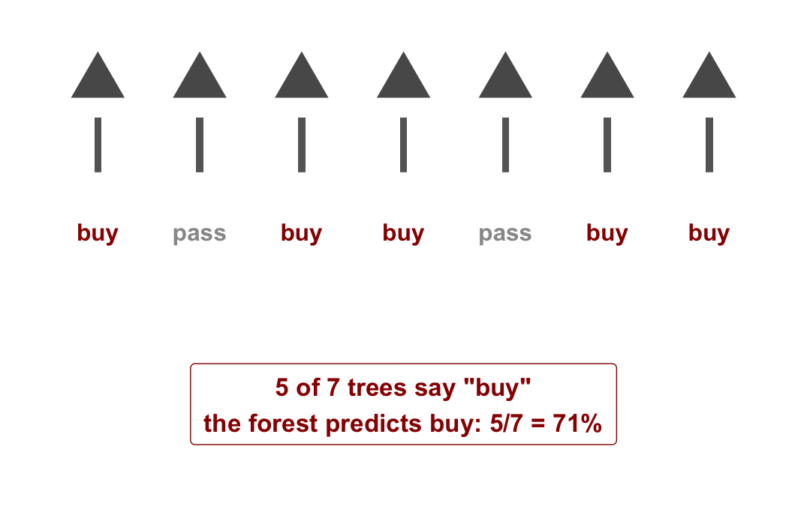
An illustration with made-up numbers: the splits, the counts, and the votes are for reading practice, not from data.
Both combine many trees. They differ in how the trees are built:
| Random forest | Boosting (XGBoost) | |
|---|---|---|
| How it works | many trees in parallel, each on a random sample; predictions are averaged | trees one after another; each new tree fixes the previous mistakes |
| What it improves | steadier predictions: one odd tree cannot sway the average | sharper predictions: each tree fixes what the last one missed |
| Tuning | few knobs, works well out of the box | many knobs: how fast it learns, how deep each tree goes, how many trees |
| Risk of memorizing quirks | lower | higher, if not tuned carefully |
| When to use | a fast, strong baseline on noisy data | chasing the best predictions, with time to tune |
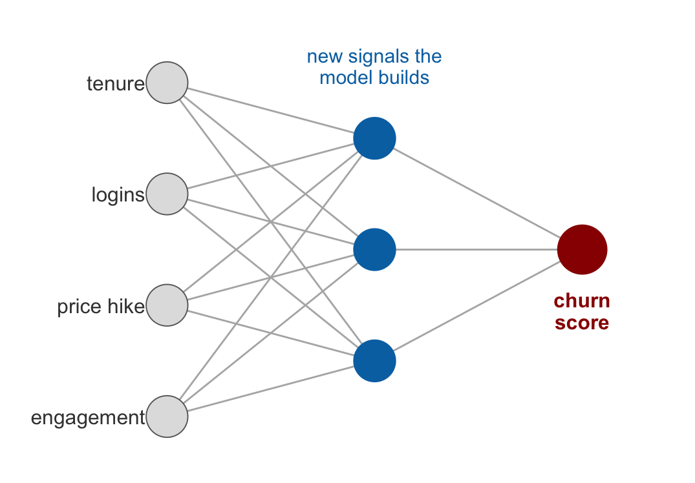
A sketch: the features flow left to right, and the model learns the weight of every line.
Suppose we predict whether each customer churns (yes/no), and then watch what actually happens. Four things are possible:
| Predicted: churn | Predicted: stay | |
|---|---|---|
| Actually churned | true positive (TP) | false negative (FN), we missed one |
| Actually stayed | false positive (FP), false alarm | true negative (TN) |
This 2-by-2 count is the confusion matrix: every customer falls in exactly one cell.
The two mistakes are not the same mistake. A false positive wastes a retention offer on someone who was staying anyway. A false negative lets a churner walk out the door. Which one costs more depends on the business.
Our classifier made a call for 200 customers, and then we watched what happened:
| Predicted: churn | Predicted: stay | |
|---|---|---|
| Actually churned | 50 (TP) | 10 (FN) |
| Actually stayed | 20 (FP) | 120 (TN) |
Three questions, three metrics. Compute them from the table:
Take a minute: each answer is one fraction, read straight off the table.
| Predicted: churn | Predicted: stay | |
|---|---|---|
| Actually churned | 50 (TP) | 10 (FN) |
| Actually stayed | 20 (FP) | 120 (TN) |
Churn is usually rare. Say 10,000 customers, 5% churn: 500 churners, 9,500 stayers. Compare two models:
| Model | Predicted churn | TP | FP | FN | TN | Accuracy | Precision | Recall |
|---|---|---|---|---|---|---|---|---|
| “Nobody churns” | 0 | 0 | 0 | 500 | 9,500 | 95% | undefined | 0% |
| A useful model | 600 | 300 | 300 | 200 | 9,200 | 95% | 50% | 60% |
Why “undefined”: the first model never says “churn”, so there are no churn calls to grade. Precision would be 0 divided by 0.
When the “yes” class is rare (churners, clickers, fraud), never judge a model by accuracy alone. Look at precision and recall.
F1 combines precision and recall into one number between 0 and 1:
\[F1 = 2 \cdot \frac{\text{Precision} \times \text{Recall}}{\text{Precision} + \text{Recall}}\]
Use F1 to rank models with one number when one class is rare. But for decisions, keep precision and recall separate: they price two different mistakes.
The goal is to predict new, unseen customers. The danger is a model that memorizes the old ones instead:
A model is only as good as its performance on data it has never seen. Grading it on the data it learned from is letting it grade its own homework.
Split the data before fitting (usually 70/30 or 80/20):
| Set | What it is for |
|---|---|
| Training set | fit the model: estimate coefficients, grow the trees |
| Test set | held out, never touched during fitting: it plays the role of new customers |
Then compare:
A churn example with real calendar time: train on 2019 to 2024 customers, test on 2025 customers. If it holds up on 2025, we can trust it for 2026.
One split can get lucky. K-fold cross-validation repeats the check:
We will not run cross-validation by hand today: R does it in a few lines, and the exercise sticks to one train/test split. What matters is the idea: never grade a model on the data it trained on.
Rare classes break accuracy: a few slides ago, the do-nothing model scored 95% and caught zero churners. Our first fix was better grading: judge the model by precision (how good its “churn” calls are) and recall (how many churners it catches), not by accuracy. When the “yes” class is truly scarce (1% fraud, not 18% churn), there is a second lever: change what the model trains on.
| Option | What it does |
|---|---|
| Oversample the rare class | repeat the existing churners (or create lookalike ones) in the training set until the model sees them often |
| Undersample the common class | drop stayers from the training set |
| Class weights | keep the data as it is; tell the model that missing a churner is a bigger mistake than flagging a customer who was going to stay anyway |
Rebalancing does not create information that is not in the data. Try the honest version first: keep the data as it is, grade with precision and recall, and if the model flags too few churners, lower the bar in the decision rule (predict churn at a score of 0.2 instead of 0.5).
Laptops out: from here we build the model together in R. Download w9-code.zip from the course page, open w9-1-classifiers-class.R, and run along; every chart and table on the slides comes out of that script.
The data: 3,000 customers of a subscription service, 18.3% churned. For each customer we see:
| Feature | Why it should matter |
|---|---|
| tenure (months) | long-time customers are safer |
| logins, last 30 days | fewer logins, higher risk |
| support tickets, last 30 days | more tickets, higher risk |
| email engagement (0 to 1) | engaged customers are safer |
| price increase, last 60 days | a price hike raises risk |
| plan downgrade | a downgrade is a warning sign |
| region | small differences across markets |
Setup: 70/30 split (2,099 train, 901 test), then a logit on the training set. Every number that follows is computed on the test set: customers the model has never seen.
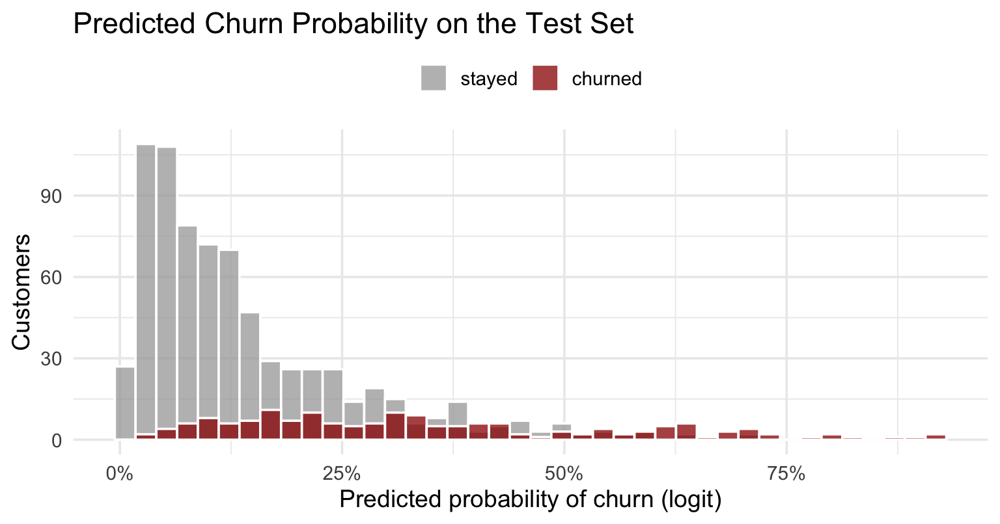
Each test customer gets a predicted churn probability. Grey: customers who stayed. Red: customers who actually churned. What do you see?
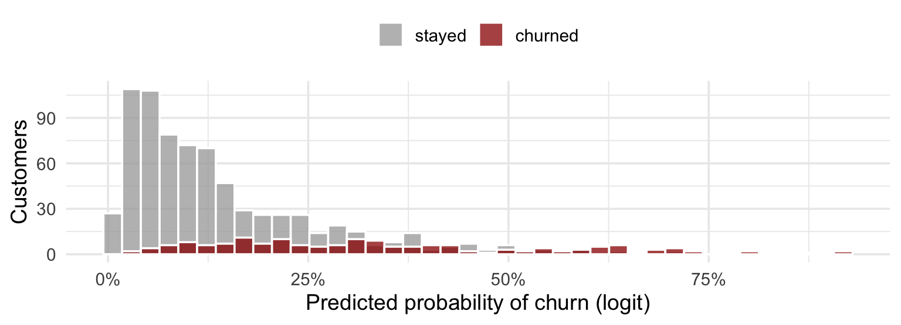
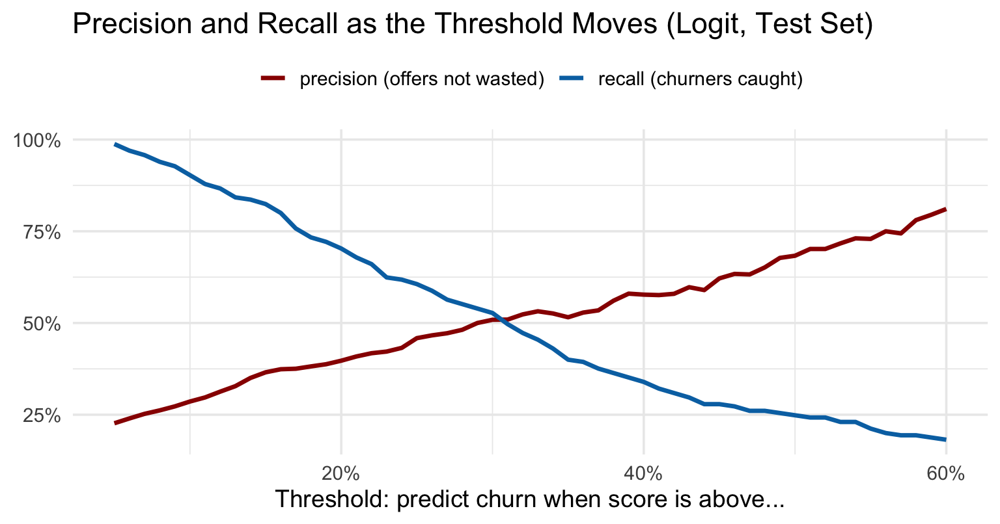
The same logit, scored at every threshold from 5% to 60%. What happens to each line as the threshold rises, and where would you set the dial?
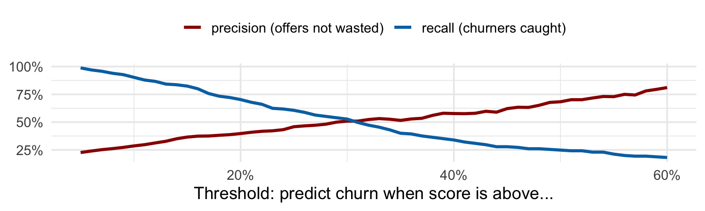
The dial chart is a menu, and the business picks from it. Say the retention team insists that at least half the offers land on real churners:
Different goals pick different spots on the same chart: cheap offers favor recall (set the bar low), expensive offers favor precision (set it high). And when the team can only make so many calls (say, 90), skip the threshold entirely: rank the customers by score and work from the top of the list (coming up in a few slides).
The ROC curve traces the whole threshold dial at once: for every threshold, it plots the share of churners caught (y) against the share of stayers wrongly called churners (x).
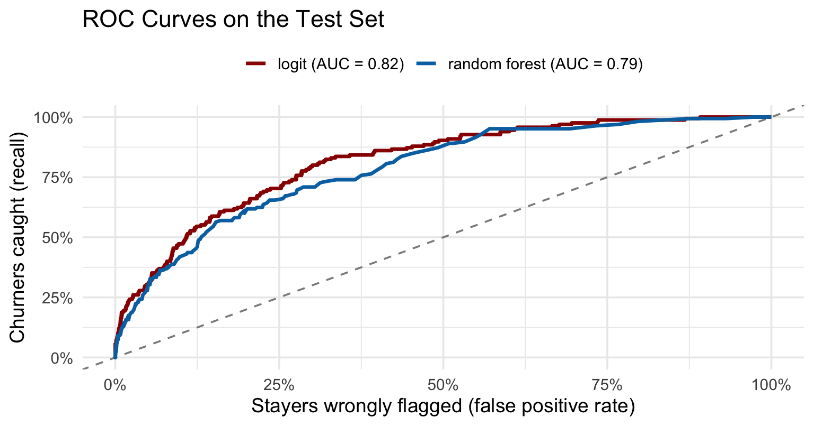
Both models, every threshold, one chart. The dashed diagonal is random guessing. Which model would you take to the retention team?
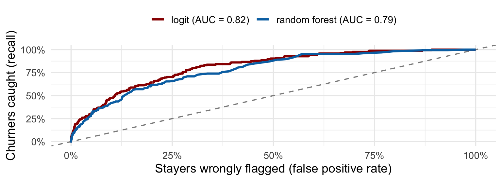
What we just did, as steps you can rerun on any yes/no problem:
| Step | What to do |
|---|---|
| 1. Data | one row per customer: the outcome (0/1) and the features |
| 2. Split | 70/30 train/test, before touching any model |
| 3. Fit | a logit first (the baseline), then a challenger (random forest) |
| 4. Score | predicted probabilities on the test set only |
| 5. Compare | AUC and the metrics table: does the challenger beat the baseline? |
| 6. Read | odds ratios (logit), feature importance (forest): what drives risk |
| 7. Act | pick the threshold that matches the business goal, or rank by score and act on the top of the list |
Both models on the test set, threshold at the 0.5 default:
| Accuracy | Precision | Recall | AUC | |
|---|---|---|---|---|
| Logit | 84.1% | 68.3% | 24.8% | 0.82 |
| Random forest | 83.1% | 65.1% | 17.0% | 0.79 |
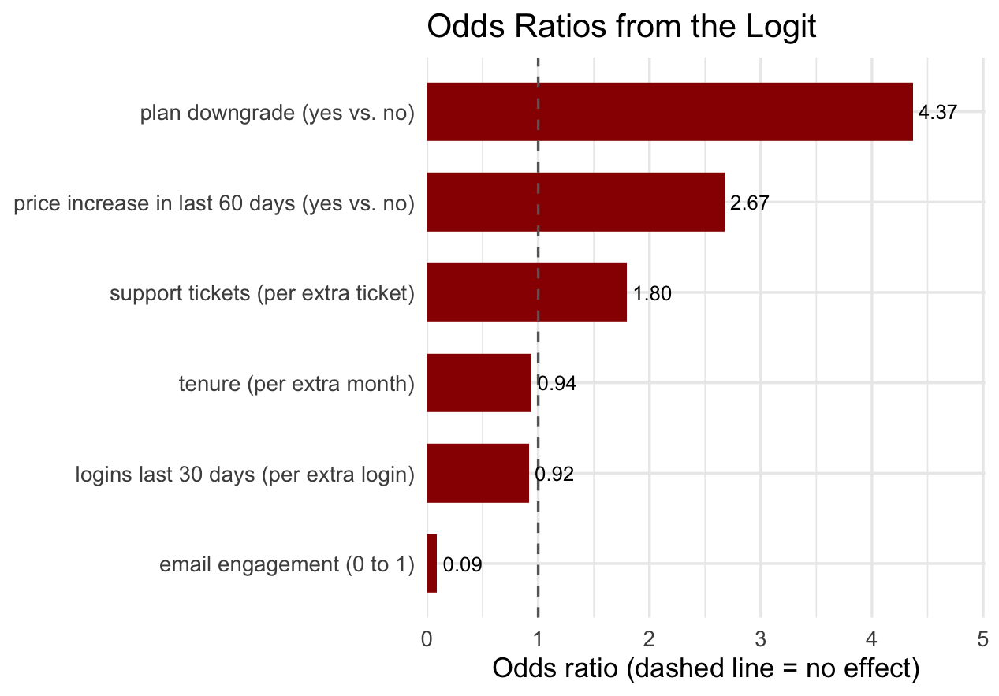
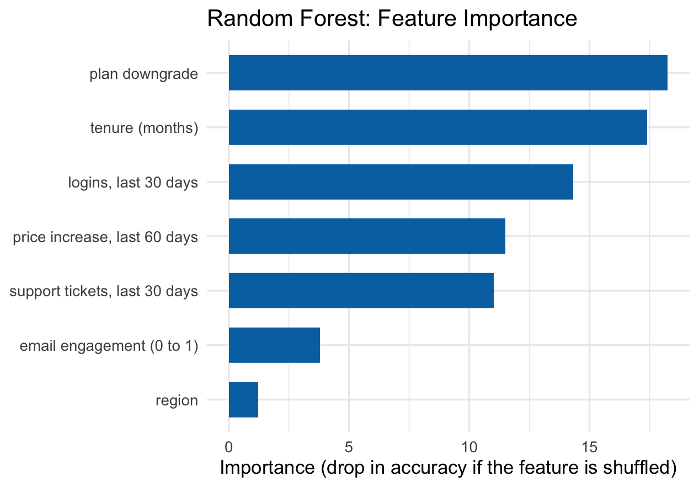
Suppose the retention team can call 10% of the test customers (91 calls). Skip the threshold: rank by score and take the top 91 (the forest’s list):
Three ways to run the same model: the default 0.5 cutoff (fine when both mistakes cost about the same and the outcome is not rare), a threshold chosen to hit a precision or recall target, or top-K when the team can only handle so many customers. The model gives scores; the business sets the dial.
Same recipe, new question: who clicks the ad?
The R code and data behind every chart and table:
w9-code.zip: the class script, the churn data, and the ad-click data for the exercisew9-1-classifiers-class.R: the churn model end to end: split, logit vs. forest, metrics, ROC, odds ratios, importance, top-KOptional reading: chapters 11.4 to 11.6 of R for Marketing Research and Analytics. Thursday: Hong Zhang (Netflix), bring questions about data science careers in marketing.
MKT 566 · Marketing Analytics